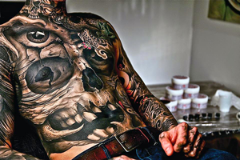
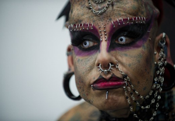
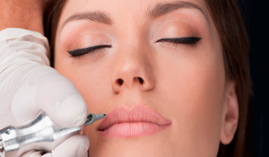

Татуировка
Татуировка — это нанесение рисунков на кожу с помощью введения под неё различных красящих веществ.
Татуировки давно перестали быть аксессуаром исключительно моряков и заключённых. Их носят совершенно разные люди, чтобы выразить себя, подчеркнуть какую-то часть тела или, наоборот, скрыть шрам. Просто для красоты, в конце концов. Но помимо общеизвестных фактов (боль, важность санитарных условий при нанесении), об искусстве татуировки есть масса домыслов. И информации, не очевидной для большинства.
Размер имеет значение
Маленькая татуировка редко бывает хорошей. Если это плотно забитый чёрный круг диаметром в 2 сантиметра — ещё куда ни шло, но чем больше в рисунке деталей (контуров, переходов цвета и т. д.), тем крупнее он должен быть. Это важно не только из-за эстетики. Тонкий контур (меньше пары миллиметров) хуже держится и со временем начнёт «плыть». Если татуировка чёрная, это уже не исправить.Размер рисунка, в свою очередь, диктует место нанесения, и есть стили, которые при всём желании не сделать мелко. Если вы хотите реалистичный портрет, готовьте плечо, спину или другую большую зону.
Мастера выбирают по портфолио
Тату-мастера, как дизайнеры или иллюстраторы, почти всегда специализируются на каком-то стиле. Это стоит использовать. Ваш знакомый татуировщик может дать скидку, но речь о рисунке на всю жизнь. Если нужен японский дракон, ищите мастера, который работает именно в этом стиле и делает его потрясающе.
Больно будет, вопрос — насколько
Болевой порог у всех разный. Есть люди, которые воют от первого укола, а некоторые могут лежать под машинкой три часа, писать SMS и смотреть фильмы с планшета, даже не поморщившись. И те и другие — исключения. В целом, татуировка — болезненный, но, как правило, терпимый процесс. На силу ощущений влияет время сеанса (чем дольше, тем больнее), наличие или отсутствие анестезии (используются обезболивающие крема), индивидуальные особенности человека и расположение рисунка. Есть места, где будет особенно неприятно. А на других бить татуировку попросту бессмысленно, и дело даже не в боли. Просто кожа там меняется слишком быстро, и рисунок вскоре превратится в кашу.
Набить тату — лишь половина работы
Когда говорят, что «это на всю жизнь», речь не только о самом рисунке. Татуировка — часть вашего тела, за которой тоже надо ухаживать. Ваш главный враг — солнце. Татуировку необходимо защищать от него либо одеждой, либо солнцезащитным кремом (SPF 50+). Иначе рисунок (особенно цветной) быстро потускнеет. Второй враг — собственная лень. Хороший мастер выдаст вам набор инструкций по уходу за «обновкой». Следуйте им неукоснительно, потому что первые две недели решающие. Рассматривайте это как послеоперационный период. Вы сядете на велосипед с незажившей ногой? Не сомневайтесь, татуировка — это травма. Тысячи уколов в минуту, пробивающих эпидермис и помещающих пигмент в дерму. Раз уж решились, лучше подойти к вопросу серьёзно.
Пирсинг
Пирсинг — одна из форм модификаций тела, создание прокола, в котором носят украшения.
Виды пирсинга
Наверно, не осталось уже точек на теле человека, где не побывала игла или сережка. Обсуждать все виды пирсинга не имеет никакого смысла, для этого придется описывать сотни и даже тысячи различных, порой единичных, случаев. Попробуем охватить лишь самые популярные из них.
Пирсинг уха
Прокол мочки уха – самый распространенный вариант из видов пирсинга уха. Для проколов небольшого диаметра используются кольца, подковы, иногда лабреты и бананы. Для проколов большего диаметра – тоннели, плаги, растяжки. Существует два способа получения проколов большого диаметра: а) делается небольшой прокол и постепенно растягивается при помощи растяжек; б) отверстие необходимого диаметра сразу вырезается в мочке уха скальпелем.
Хеликс (англ. - helix) – прокол верхней части уха (хряща). Рекомендуемые украшения для хеликса: лабреты, кольца, подковы с диаметром основания 1,2мм.
Индастриал (англ. – industrial) – двойной параллельный прокол верхнего хряща уха. Украшения: длинная штанга с диаметром основания 1,6мм.
Рук (англ. – rook) – пирсинг внутренней верхней части хряща ушной раковины. Украшения: микро-бананы, микро-штанги, кольца, подковы с диаметром основания 1,2мм.
Дэйс (англ. – daith) - пирсинг средней части хряща ушной раковины. В качестве украшения обычно используются кольца или подковы с диаметром основания 1,2мм.
Козелок (трагус, англ. – tragus) – прокол хряща у передней стенки наружного слухового прохода. Украшения: микро-лабрет, кольцо или подкова с диаметром основания 1,2мм.
Снаг (англ. – snug) – прокол средней внешней части хряща уха. Украшения: кольца и подковы с диаметром основания 1,2мм.
Прокол ушной раковины (конч, англ. - conch) – пирсинг ушной раковины. Украшения: кольца и подковы с диаметром основания 1,6мм.
Противокозелок (антитрагус, англ. – antitragus) – прокол части хряща, расположенной напротив ушного канала. Рекомендуемые украшения: кольца и подковы с диаметром основания 1,2мм.
Пирсинг брови
Как правило, в качестве украшения для первичного прокола брови используется микро-банан 1,2х10 или на 1,2х12 мм. Предпочтительные материалы: титан G23 или биопласт. После заживления брови обычно носят микро-бананы, бананы и кольца.
Пирсинг языка
В качестве украшения для первичного прокола используются штанги с диаметром основания 1,6мм и длиной 16-20мм. Для зажившего языка используются штанги меньшей длины.
Пирсинг носа
Для прокола крыла носа обычно используют следующие украшения: «нострилы», кольца с толщиной основания 1.0 – 1,2 мм. Для прокола носовой перегородки (пирсинг септума, англ. – septum) используется кольца и подковы с диаметром основания 1,2мм.
Пирсинг губ
Рекомендуемые украшения для губы: лабреты, кольца, подковы с диаметром основания 1,2 – 1,6 мм.
Пирсинг пупка
Обычно в качестве украшения используются бананы, штанги, кольца, подковы. Для первичного прокола рекомендуется использовать простой банан без острых и выступающих частей, цепляющихся за одежду.
Пирсинг сосков
Прокол сосков может быть горизонтальным или вертикальным. Украшения: кольца, штанги, бананы. Наиболее частый вопрос, возникающий у клиентов женского пола, касается возможности кормления грудного ребенка после прокола сосков. Вопреки распространенному заблуждению о его невозможности, кормление с пирсингом сосков абсолютно реально. Сосок имеет пористую структуру и порядка 20 – 30 каналов для вскармливая. Прокол повреждает лишь небольшую их часть. Помимо того, пирсинг сосков помогает решить проблему плоского соска, затрудняющего кормление грудью.
Интимный пирсинг
Это проколы половых органов, украшения подбираются в зависимости от места прокола. За дополнительной информацией обращайтесь в студию.
Уход
В первые 2 недели необходимо исключить посещение сауны, бассейна, купания в природных водоемах, особенно в море - соленая вода препятствует заживлению. Не следует использовать для протирания препараты кроме рекомендованных, использовать только обезжиренные кремы. При осложнениях - покраснении, припухлости, зуде - следует обратиться к дерматологу.
Что нужно помнить
Нельзя обрабатывать место проколы спиртосодержащими веществами или перекисью водорода. Кроме случаев, когда такой уход рекомендован специалистом (обычно для обработки пупка, носа, брови рекомендуют левомицитиновый спирт). Рекомендуется использовать только украшения для пирсинга, изготовленные из хирургической стали, титана и золота, причем украшения из золота вставляются в свежий прокол только при отсутствии индивидуальной непереносимости золота, в противном случае золотое украшение можно вставлять в прокол только через пару недель. Перед посещением пирсинг-салона рекомендуется поесть, что бы избежать головокружения и слабости.
Перманентный макияж
Перманентный макияж — возможность надолго изменить собственный внешний вид по своему вкусу.
Перманентный макияж, как вид эстетической татуировки, имеет много синонимов и означает одно и тоже: татуаж или перманентный татуаж, имплантация пигмента, микропигментирование, дермопигментация, контурный макияж и другое. Перманентный макияж изначально произошел от классической татуировки, но сейчас уже существенно отличает техникой татуажа, составом красителей, минимальной травматичностью и используемым оборудованием.
На сегодняшний момент перманентный макияж пользуется достаточной популярностью как эффективное решение эстетических проблем внешнего вида.
Для чего делают перманентный макияж?
1)Для экономии времени. Чего не хватает в современном мире современной женщине? Правильно – времени. Перманентный макияж поможет сократить время на утренние или вечерние сборы;
2)Стойкость макияжа. Забудьте о «поплывшем макияже» при дожде или пасмурной погоде. Теперь можно не беспокоиться о своем внешнем виде при посещении сауны или бассейна;
3)Улучшение формы черт лица. Перманентный макияж зачастую позволяет визуально справиться с такими неприятностями, как асимметрия лица или возрастными изменениями;
4)Перманентный макияж бровей омолаживает внешний вид, решает проблему с выпадением волос бровей, позволяет добиться естественного оттенка и аккуратной формы на долгое время;
5)Перманентный макияж глаз и губ придаст выразительности и яркости. Ресницы будут выглядеть более густыми, губы обладать соблазнительным объемом;
6)Можно расположить родинку в любом понравившемся месте;
Памятка по уходу после прохождения процедуры перманентного макияжа:
В первые дни нужно смазывать зону татуажа специальной антисептической мазью. Если образуются корочки, то можно использовать увлажняющие крема. В первые часы после нанесения перманентного макияжа на губах воздерживайтесь от употребления еды и горячих напитков. Необходимо исключить использование косметики, посещение солярия, желательно не находиться под действием прямых солнечных лучей. Категорически запрещается отмачивать и отрывать корочки, до момента их отхождения исключить посещение бассейна, бани или сауны. Более полную информацию по уходу за лицом после татуажа Вы получите после прохождения процедуры перманентного макияжа в нашем салоне.